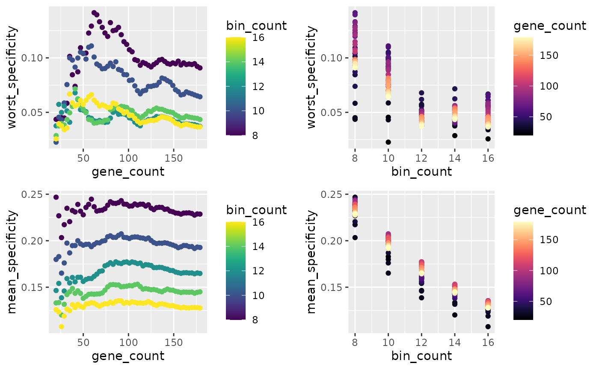
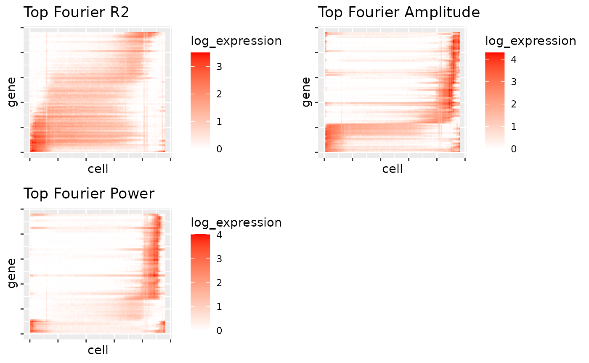
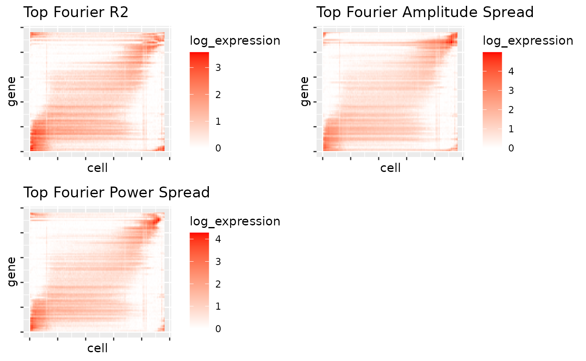

Comparing Gene Selection Methods
gene_selection_comparison.Rmd
library(readxl)
library(scran)
library(slingshot)
library(tradeSeq)
library(BiocParallel)
library(UpSetR)
library(emdist)
library(scater)
library(fs)
library(utils)
library(metR)
library(blase)
RNGversion("3.5.0")
#> Warning in RNGkind("Mersenne-Twister", "Inversion", "Rounding"): non-uniform
#> 'Rounding' sampler used
SEED = 7
set.seed(SEED)
N_CORES = 4
if (ami::using_ci()) {
N_CORES = 2
}In this article we will look at different methods for gene selection, using the MCA’s Plasmodium berghei Data Howick et al, 2019, and bulk RNA seq of the lifecycle stages Otto et al, 2004.
We will investigate in detail the ‘power’ method for gene selection described in Bozdech et al. 2003
Load Data
root_dir = tools::R_user_dir("BLASE", "data")
article_dir = path(root_dir, "gene_selection_comparison")
if (!dir.exists(article_dir)) {
dir.create(article_dir, recursive = TRUE)
}
bulk_path = path(article_dir, 'otto_pb_bulk_timepoints', ext="xlsx")
if (!file.exists(bulk_path)) {
download.file('https://static-content.springer.com/esm/art%3A10.1186%2Fs12915-014-0086-0/MediaObjects/12915_2014_86_MOESM9_ESM.xlsx', bulk_path)
}else {
print("Using cached")
}
bulk = as.data.frame(read_excel(bulk_path, range = "FPKM PbA !A4:L5024"))
rownames(bulk) = bulk$`Gene Models (IDs)`
rownames(bulk) = gsub(x=rownames(bulk), pattern="_", replacement="-", fixed=TRUE)
bulk = subset(bulk, , -c(`Gene Models (IDs)`))
rownames(bulk) = paste0(rownames(bulk), '0');
data(processed_MCA_PB_SCE, package="blase")
# Remove unshared genes from bulk and sc
bulk = bulk[rownames(bulk) %in% rownames(processed_MCA_PB_SCE),]
processed_MCA_PB_SCE = processed_MCA_PB_SCE[rownames(processed_MCA_PB_SCE) %in% rownames(bulk),]
gridExtra::grid.arrange(
plotPCA(processed_MCA_PB_SCE, colour_by="STAGE_LR"),
plotUMAP(processed_MCA_PB_SCE, colour_by="STAGE_LR"),
plotPCA(processed_MCA_PB_SCE, colour_by="slingPseudotime_1"),
plotUMAP(processed_MCA_PB_SCE, colour_by="slingPseudotime_1"),
plotPCA(processed_MCA_PB_SCE, colour_by="pseudotime_bin"),
plotUMAP(processed_MCA_PB_SCE, colour_by="pseudotime_bin"),
ncol=2
)Using TradeSeq
First, we’ll use tradeSeq to find the genes that Tradeseq thinks are variable over pseudotime.
associationTestResult <- associationTest(processed_MCA_PB_SCE, lineages=T, global=F, contrastType="consecutive")
table(processed_MCA_PB_SCE$pseudotime_bin)
#>
#> 1 2 3 4 5 6 7 8 9 10 11 12
#> 273 295 162 882 1247 473 341 293 5 370 185 237
plotUMAP(processed_MCA_PB_SCE, colour_by="pseudotime_bin")
genelist = blase::get_top_n_genes(associationTestResult, n_genes = 200, lineage = 1)
res = find_best_params(processed_MCA_PB_SCE,
genelist,
split_by="pseudotime_range",
pseudotime_slot="slingPseudotime_1",
bins_count_range = seq.int(8, 16, 2),
gene_count_range = seq.int(20, 180, 3))
x = as.BlaseData(processed_MCA_PB_SCE, pseudotime_slot="slingPseudotime_1", n_bins=14, split_by="pseudotime_range")
tradeseq_tuning = plot_find_best_params_results(res)
BUCKETS_COUNT = 12
GENES_TO_USE_COUNT = 120
x = as.BlaseData(processed_MCA_PB_SCE, pseudotime_slot="slingPseudotime_1", n_bins=BUCKETS_COUNT, split_by="pseudotime_range")
x@genes = genelist[1:GENES_TO_USE_COUNT]
genes_tradeseq = x@genes
processed_MCA_PB_SCE = assign_pseudotime_bins(processed_MCA_PB_SCE, pseudotime_slot="slingPseudotime_1", n_bins=BUCKETS_COUNT, split_by="pseudotime_range")
plotUMAP(processed_MCA_PB_SCE, colour="pseudotime_bin")
mapping_results = c()
for (bulkname in colnames(bulk)) {
res = map_best_bin(x, bulkname, bulk)
mapping_results = c(mapping_results, res)
print(res)
}
#> MappingResult for 'Ring': best_bin=3 correlation=0.717320647267171 top_2_distance=0.0765
#> Confident Result: TRUE (next max upper 0.655989999305507 )
#> with history for scores against 12 bins
#> Bootstrapped with 200 iterations
#> MappingResult for 'Ring-R': best_bin=3 correlation=0.817570664629488 top_2_distance=0.0485
#> Confident Result: FALSE (next max upper 0.789274088233135 )
#> with history for scores against 12 bins
#> Bootstrapped with 200 iterations
#> MappingResult for 'Trophozoite': best_bin=5 correlation=0.899374956594208 top_2_distance=0.0266
#> Confident Result: TRUE (next max upper 0.884075283005764 )
#> with history for scores against 12 bins
#> Bootstrapped with 200 iterations
#> MappingResult for 'Trophozoite-R': best_bin=5 correlation=0.895339954163483 top_2_distance=0.0103
#> Confident Result: FALSE (next max upper 0.89497881797347 )
#> with history for scores against 12 bins
#> Bootstrapped with 200 iterations
#> MappingResult for 'Schizont': best_bin=10 correlation=0.616869227029655 top_2_distance=0.0233
#> Confident Result: FALSE (next max upper 0.640802807139989 )
#> with history for scores against 12 bins
#> Bootstrapped with 200 iterations
#> MappingResult for 'Schizont-R': best_bin=9 correlation=0.696268556050864 top_2_distance=0.0383
#> Confident Result: FALSE (next max upper 0.679290228488089 )
#> with history for scores against 12 bins
#> Bootstrapped with 200 iterations
#> MappingResult for 'Gametocyte': best_bin=4 correlation=0.350218765192027 top_2_distance=0.0121
#> Confident Result: FALSE (next max upper 0.360286062029264 )
#> with history for scores against 12 bins
#> Bootstrapped with 200 iterations
#> MappingResult for 'Gametocyte-R': best_bin=4 correlation=0.346135148274186 top_2_distance=0.0062
#> Confident Result: FALSE (next max upper 0.360138621708954 )
#> with history for scores against 12 bins
#> Bootstrapped with 200 iterations
#> MappingResult for 'Ookinete-16h': best_bin=4 correlation=0.295437183137718 top_2_distance=0.0081
#> Confident Result: FALSE (next max upper 0.312736995624696 )
#> with history for scores against 12 bins
#> Bootstrapped with 200 iterations
#> MappingResult for 'Ookinete-16h-R': best_bin=4 correlation=0.341294534342663 top_2_distance=0.02
#> Confident Result: FALSE (next max upper 0.337155358010973 )
#> with history for scores against 12 bins
#> Bootstrapped with 200 iterations
#> MappingResult for 'Ookinete-24h': best_bin=1 correlation=0.480825057295645 top_2_distance=0.0466
#> Confident Result: FALSE (next max upper 0.459234308602947 )
#> with history for scores against 12 bins
#> Bootstrapped with 200 iterations
tradeseq_heat = blase::plot_mapping_result_heatmap(rev(mapping_results)) + ggplot2::ggtitle(paste0('TradeSeq (', GENES_TO_USE_COUNT,')'))
tradeseq_heatUsing marker genes
Here we will simply select the top n marker genes for our lifecycle stage annotations.
markers <- scoreMarkers(processed_MCA_PB_SCE, lfc=1, groups=processed_MCA_PB_SCE$STAGE_LR)
top_n_markers_per_group = 40
genes=DataFrame()
for (group in names(markers)) {
group_markers=markers[[group]]
top_genes=group_markers[order(-group_markers$mean.logFC.cohen),][0:top_n_markers_per_group,]
top_genes=top_genes[0:top_n_markers_per_group,]
top_genes
top_genes$group = group
genes = rbind(genes,top_genes)
}
genes = DataFrame(genes$mean.logFC.cohen, genes$group)
genelist = rownames(genes)
res = find_best_params(processed_MCA_PB_SCE,
genelist,
split_by="pseudotime_range",
pseudotime_slot="slingPseudotime_1",
bins_count_range = c(12),
gene_count_range = c(120))
markergenes_tuning = plot_find_best_params_results(res)
BUCKETS_COUNT = 12
GENES_TO_USE_COUNT = 120
x = as.BlaseData(processed_MCA_PB_SCE, pseudotime_slot="slingPseudotime_1", n_bins=BUCKETS_COUNT, split_by="pseudotime_range")
x@genes = genelist[1:GENES_TO_USE_COUNT]
genes_markergenes = x@genes
processed_MCA_PB_SCE = assign_pseudotime_bins(processed_MCA_PB_SCE, pseudotime_slot="slingPseudotime_1", n_bins=BUCKETS_COUNT, split_by="pseudotime_range")
mapping_results = c()
for (bulkname in colnames(bulk)) {
res = map_best_bin(x, bulkname, bulk)
mapping_results = c(mapping_results, res)
print(res)
}
#> MappingResult for 'Ring': best_bin=3 correlation=0.702951593860685 top_2_distance=0.055
#> Confident Result: TRUE (next max upper 0.661881446383033 )
#> with history for scores against 12 bins
#> Bootstrapped with 200 iterations
#> MappingResult for 'Ring-R': best_bin=3 correlation=0.806486561566775 top_2_distance=0.0049
#> Confident Result: FALSE (next max upper 0.811763398612525 )
#> with history for scores against 12 bins
#> Bootstrapped with 200 iterations
#> MappingResult for 'Trophozoite': best_bin=5 correlation=0.870997985971248 top_2_distance=0.0154
#> Confident Result: TRUE (next max upper 0.862698798527675 )
#> with history for scores against 12 bins
#> Bootstrapped with 200 iterations
#> MappingResult for 'Trophozoite-R': best_bin=4 correlation=0.852739773595388 top_2_distance=0.0024
#> Confident Result: FALSE (next max upper 0.856462254323217 )
#> with history for scores against 12 bins
#> Bootstrapped with 200 iterations
#> MappingResult for 'Schizont': best_bin=10 correlation=0.636759497187305 top_2_distance=0.0379
#> Confident Result: FALSE (next max upper 0.640968585325089 )
#> with history for scores against 12 bins
#> Bootstrapped with 200 iterations
#> MappingResult for 'Schizont-R': best_bin=9 correlation=0.61449671285455 top_2_distance=0.0243
#> Confident Result: FALSE (next max upper 0.6103201611223 )
#> with history for scores against 12 bins
#> Bootstrapped with 200 iterations
#> MappingResult for 'Gametocyte': best_bin=5 correlation=0.44324605875408 top_2_distance=0.0099
#> Confident Result: FALSE (next max upper 0.449058962427946 )
#> with history for scores against 12 bins
#> Bootstrapped with 200 iterations
#> MappingResult for 'Gametocyte-R': best_bin=5 correlation=0.442627960275019 top_2_distance=0.0103
#> Confident Result: FALSE (next max upper 0.446892145287867 )
#> with history for scores against 12 bins
#> Bootstrapped with 200 iterations
#> MappingResult for 'Ookinete-16h': best_bin=5 correlation=0.226154594069033 top_2_distance=3e-04
#> Confident Result: FALSE (next max upper 0.262886311549413 )
#> with history for scores against 12 bins
#> Bootstrapped with 200 iterations
#> MappingResult for 'Ookinete-16h-R': best_bin=5 correlation=0.260969511771651 top_2_distance=0.028
#> Confident Result: TRUE (next max upper 0.248885771383408 )
#> with history for scores against 12 bins
#> Bootstrapped with 200 iterations
#> MappingResult for 'Ookinete-24h': best_bin=1 correlation=0.442530731300785 top_2_distance=0.0099
#> Confident Result: FALSE (next max upper 0.450312176635463 )
#> with history for scores against 12 bins
#> Bootstrapped with 200 iterations
markergenes_heat = blase::plot_mapping_result_heatmap(rev(mapping_results)) + ggplot2::ggtitle(paste0('Marker Genes (', GENES_TO_USE_COUNT,')'))
markergenes_heatPseudotime bin marker genes
Here we select the marker genes for each pseudotime bin.
processed_MCA_PB_SCE = assign_pseudotime_bins(processed_MCA_PB_SCE, pseudotime_slot="slingPseudotime_1", n_bins=12, split_by="pseudotime_range")
markers <- scoreMarkers(processed_MCA_PB_SCE, lfc=1, groups=processed_MCA_PB_SCE$pseudotime_bin)
top_n_markers_per_group = 10
genes=DataFrame()
for (group in names(markers)) {
group_markers=markers[[group]]
top_genes=group_markers[order(-group_markers$mean.logFC.cohen),][0:top_n_markers_per_group,]
top_genes=top_genes[0:top_n_markers_per_group,]
top_genes
top_genes$group = group
genes = rbind(genes,top_genes)
}
genes = DataFrame(genes$mean.logFC.cohen, genes$group)
genelist = rownames(genes)
res = find_best_params(processed_MCA_PB_SCE,
genelist,
split_by="pseudotime_range",
pseudotime_slot="slingPseudotime_1",
bins_count_range = c(12),
gene_count_range = c(120))
markergenes_by_bin_tuning = plot_find_best_params_results(res)
BUCKETS_COUNT = 12
GENES_TO_USE_COUNT = 120
x = as.BlaseData(processed_MCA_PB_SCE, pseudotime_slot="slingPseudotime_1", n_bins=BUCKETS_COUNT, split_by="pseudotime_range")
x@genes = genelist[1:GENES_TO_USE_COUNT]
genes_markergenes_by_bin = x@genes
processed_MCA_PB_SCE = assign_pseudotime_bins(processed_MCA_PB_SCE, pseudotime_slot="slingPseudotime_1", n_bins=BUCKETS_COUNT, split_by="pseudotime_range")
mapping_results = c()
for (bulkname in colnames(bulk)) {
res = map_best_bin(x, bulkname, bulk)
mapping_results = c(mapping_results, res)
print(res)
}
#> MappingResult for 'Ring': best_bin=3 correlation=0.743497083478443 top_2_distance=0.0317
#> Confident Result: FALSE (next max upper 0.738294776124255 )
#> with history for scores against 12 bins
#> Bootstrapped with 200 iterations
#> MappingResult for 'Ring-R': best_bin=2 correlation=0.845505047261272 top_2_distance=0.012
#> Confident Result: FALSE (next max upper 0.84407990716716 )
#> with history for scores against 12 bins
#> Bootstrapped with 200 iterations
#> MappingResult for 'Trophozoite': best_bin=5 correlation=0.866147557210284 top_2_distance=0.0085
#> Confident Result: FALSE (next max upper 0.87200316744753 )
#> with history for scores against 12 bins
#> Bootstrapped with 200 iterations
#> MappingResult for 'Trophozoite-R': best_bin=4 correlation=0.849782411636202 top_2_distance=0.0043
#> Confident Result: FALSE (next max upper 0.856186768265788 )
#> with history for scores against 12 bins
#> Bootstrapped with 200 iterations
#> MappingResult for 'Schizont': best_bin=10 correlation=0.6548940884732 top_2_distance=0.0365
#> Confident Result: FALSE (next max upper 0.647252954763495 )
#> with history for scores against 12 bins
#> Bootstrapped with 200 iterations
#> MappingResult for 'Schizont-R': best_bin=8 correlation=0.642717475488749 top_2_distance=7e-04
#> Confident Result: FALSE (next max upper 0.66717799220035 )
#> with history for scores against 12 bins
#> Bootstrapped with 200 iterations
#> MappingResult for 'Gametocyte': best_bin=4 correlation=0.450503422718795 top_2_distance=0.0054
#> Confident Result: FALSE (next max upper 0.45681053315227 )
#> with history for scores against 12 bins
#> Bootstrapped with 200 iterations
#> MappingResult for 'Gametocyte-R': best_bin=4 correlation=0.450538153503121 top_2_distance=0.0036
#> Confident Result: FALSE (next max upper 0.46247859715416 )
#> with history for scores against 12 bins
#> Bootstrapped with 200 iterations
#> MappingResult for 'Ookinete-16h': best_bin=4 correlation=0.312504124280639 top_2_distance=0.0122
#> Confident Result: FALSE (next max upper 0.329640750458596 )
#> with history for scores against 12 bins
#> Bootstrapped with 200 iterations
#> MappingResult for 'Ookinete-16h-R': best_bin=4 correlation=0.339691382250485 top_2_distance=0.0129
#> Confident Result: FALSE (next max upper 0.359091019607381 )
#> with history for scores against 12 bins
#> Bootstrapped with 200 iterations
#> MappingResult for 'Ookinete-24h': best_bin=1 correlation=0.430884750902349 top_2_distance=0.0445
#> Confident Result: FALSE (next max upper 0.401474697345267 )
#> with history for scores against 12 bins
#> Bootstrapped with 200 iterations
markergenes_by_bin_heat = blase::plot_mapping_result_heatmap(rev(mapping_results)) + ggplot2::ggtitle(paste0('Marker Genes by bin (', GENES_TO_USE_COUNT,')'))
markergenes_by_bin_heat
Using Bozdech Fourier Method
processed_MCA_PB_SCE = assign_pseudotime_bins(processed_MCA_PB_SCE, pseudotime_slot="slingPseudotime_1", n_bins=12, split_by="pseudotime_range")
counts = normcounts(processed_MCA_PB_SCE)[,order(processed_MCA_PB_SCE$slingPseudotime_1)]
waves = as.data.frame(FitWave(as.matrix(counts['PBANKA-0831000',]), 0:20))
waves$gene = rownames(waves)
ggplot2::ggplot(waves, ggplot2::aes(phase, r2, color=amplitude)) +
ggplot2::geom_point()
ggplot2::ggplot(waves, ggplot2::aes(phase, amplitude, color=r2)) +
ggplot2::geom_point()
ggplot2::ggplot(waves, ggplot2::aes(phase, amplitude, color=k)) +
ggplot2::geom_point()
target_to_plot = 'PBANKA-0831000'
toplot = as.data.frame(counts[target_to_plot,order(processed_MCA_PB_SCE$slingPseudotime_1)])
toplot$pdt = processed_MCA_PB_SCE$slingPseudotime_1[order(processed_MCA_PB_SCE$slingPseudotime_1)]
colnames(toplot)[1] = 'count'
# I'm pretty sure the x value for buildwave is wrong here
toplot$wave1 = BuildWave(seq(from=0, to=max(processed_MCA_PB_SCE$slingPseudotime_1), length.out=nrow(toplot)), wave = FitWave(as.matrix(counts[target_to_plot,]), 1))
toplot$wave1and2 = BuildWave(seq(from=0, to=max(processed_MCA_PB_SCE$slingPseudotime_1), length.out=nrow(toplot)), wave = FitWave(as.matrix(counts[target_to_plot,]), 1))
toplot$wave1to3 = BuildWave(seq(from=0, to=max(processed_MCA_PB_SCE$slingPseudotime_1), length.out=nrow(toplot)), wave = FitWave(as.matrix(counts[target_to_plot,]), 1:3))
toplot$wave1toten = BuildWave(seq(from=0, to=max(processed_MCA_PB_SCE$slingPseudotime_1), length.out=nrow(toplot)), wave = FitWave(as.matrix(counts[target_to_plot,]), 1:10))
ggplot2::ggplot(toplot, ggplot2::aes(pdt, count)) +
ggplot2::geom_line() +
ggplot2::geom_line(ggplot2::aes(pdt, wave1, color='wave1')) +
ggplot2::geom_line(ggplot2::aes(pdt, wave1and2, color='wave1to2')) +
ggplot2::geom_line(ggplot2::aes(pdt, wave1to3, color='wave1to3')) +
ggplot2::geom_line(ggplot2::aes(pdt, wave1toten, color='wave1toten')) +
ggplot2::ggtitle(target_to_plot)
ggplot2::ggplot(toplot, ggplot2::aes(pdt, wave1)) +
ggplot2::geom_line() +
ggplot2::ggtitle(target_to_plot)
waves = get_waves(processed_MCA_PB_SCE, n_cores = N_CORES)
ggplot2::ggplot(waves, ggplot2::aes(phase, r2, color=amplitude)) +
ggplot2::geom_point()
ggplot2::ggplot(waves, ggplot2::aes(phase, amplitude, color=r2)) +
ggplot2::geom_point()
ggplot2::ggplot(waves, ggplot2::aes(phase, power, color=r2)) +
ggplot2::geom_point()
ggplot2::ggplot(waves, ggplot2::aes(phase, power, color=amplitude)) +
ggplot2::geom_point()Phase Ordering genes
Here we’ve plotted the genes and cells ordered by their peak phase
and pseudotime respectively. This functionality is available as a part
of BLASE, please see the gene_selection_matrix()
function.
gene_selection_matrix(processed_MCA_PB_SCE, waves, target_matrix_size=1000, n_cores=N_CORES)Here we set the number of buckets and genes to use:
BUCKETS_COUNT = 12
GENES_TO_USE_COUNT = 120Top r2 waves
top_r2_waves = select_genes_by_fourier_method(processed_MCA_PB_SCE, waves, n_genes=GENES_TO_USE_COUNT, method="r2", force_spread_selection=FALSE)
#> Warning in .local(x, ...): n_groups and top_n_per_group are not used when
#> force_spread_selection==FALSE
ggplot2::ggplot(top_r2_waves, ggplot2::aes(phase, amplitude, color=r2)) +
ggplot2::geom_point() +
ggplot2::xlim(c(0, max(processed_MCA_PB_SCE$slingPseudotime_1))) +
ggplot2::ggtitle('top_r2_waves')
top_genes_fourier_top_r2 = rownames(top_r2_waves)
x = as.BlaseData(processed_MCA_PB_SCE, pseudotime_slot="slingPseudotime_1", n_bins=BUCKETS_COUNT, split_by="pseudotime_range")
x@genes = top_genes_fourier_top_r2
processed_MCA_PB_SCE = assign_pseudotime_bins(processed_MCA_PB_SCE, pseudotime_slot="slingPseudotime_1", n_bins=BUCKETS_COUNT, split_by="pseudotime_range")
mapping_results = c()
for (bulkname in colnames(bulk)) {
res = map_best_bin(x, bulkname, bulk)
mapping_results = c(mapping_results, res)
print(res)
}
#> MappingResult for 'Ring': best_bin=3 correlation=0.786846308771442 top_2_distance=0.0331
#> Confident Result: FALSE (next max upper 0.771442461282033 )
#> with history for scores against 12 bins
#> Bootstrapped with 200 iterations
#> MappingResult for 'Ring-R': best_bin=3 correlation=0.879318008195013 top_2_distance=0.0049
#> Confident Result: FALSE (next max upper 0.892825890686853 )
#> with history for scores against 12 bins
#> Bootstrapped with 200 iterations
#> MappingResult for 'Trophozoite': best_bin=5 correlation=0.868421418154038 top_2_distance=0.006
#> Confident Result: FALSE (next max upper 0.867636641433433 )
#> with history for scores against 12 bins
#> Bootstrapped with 200 iterations
#> MappingResult for 'Trophozoite-R': best_bin=4 correlation=0.876470588235294 top_2_distance=0.0087
#> Confident Result: TRUE (next max upper 0.872838391554969 )
#> with history for scores against 12 bins
#> Bootstrapped with 200 iterations
#> MappingResult for 'Schizont': best_bin=7 correlation=0.544975345510105 top_2_distance=0.0116
#> Confident Result: FALSE (next max upper 0.558330439613862 )
#> with history for scores against 12 bins
#> Bootstrapped with 200 iterations
#> MappingResult for 'Schizont-R': best_bin=7 correlation=0.590346551843878 top_2_distance=0.0121
#> Confident Result: FALSE (next max upper 0.591284116952566 )
#> with history for scores against 12 bins
#> Bootstrapped with 200 iterations
#> MappingResult for 'Gametocyte': best_bin=3 correlation=0.452920341690395 top_2_distance=0.0058
#> Confident Result: FALSE (next max upper 0.480155053937113 )
#> with history for scores against 12 bins
#> Bootstrapped with 200 iterations
#> MappingResult for 'Gametocyte-R': best_bin=3 correlation=0.454056625559101 top_2_distance=0.005
#> Confident Result: FALSE (next max upper 0.464418670270553 )
#> with history for scores against 12 bins
#> Bootstrapped with 200 iterations
#> MappingResult for 'Ookinete-16h': best_bin=1 correlation=0.399773593825835 top_2_distance=0.0285
#> Confident Result: FALSE (next max upper 0.392686992152233 )
#> with history for scores against 12 bins
#> Bootstrapped with 200 iterations
#> MappingResult for 'Ookinete-16h-R': best_bin=1 correlation=0.419330643323144 top_2_distance=0.0226
#> Confident Result: FALSE (next max upper 0.415855267726925 )
#> with history for scores against 12 bins
#> Bootstrapped with 200 iterations
#> MappingResult for 'Ookinete-24h': best_bin=1 correlation=0.683343866561841 top_2_distance=0.0117
#> Confident Result: FALSE (next max upper 0.685186471282728 )
#> with history for scores against 12 bins
#> Bootstrapped with 200 iterations
fourier_top_r2_heat = blase::plot_mapping_result_heatmap(rev(mapping_results)) + ggplot2::ggtitle(paste0('fourier_top_r2 (', GENES_TO_USE_COUNT,')'))
fourier_top_r2_heatTop r2 waves with spread
top_r2_waves_spread = select_genes_by_fourier_method(processed_MCA_PB_SCE, waves, n_groups=GENES_TO_USE_COUNT, method="r2", force_spread_selection=TRUE)
ggplot2::ggplot(top_r2_waves_spread, ggplot2::aes(phase, amplitude, color=r2)) +
ggplot2::geom_point() +
ggplot2::xlim(c(0, max(processed_MCA_PB_SCE$slingPseudotime_1))) +
ggplot2::ggtitle('top_r2_waves_spread')
top_genes_fourier_top_r2_spread = rownames(top_r2_waves_spread)
x = as.BlaseData(processed_MCA_PB_SCE, pseudotime_slot="slingPseudotime_1", n_bins=BUCKETS_COUNT, split_by="pseudotime_range")
x@genes = top_genes_fourier_top_r2_spread
processed_MCA_PB_SCE = assign_pseudotime_bins(processed_MCA_PB_SCE, pseudotime_slot="slingPseudotime_1", n_bins=BUCKETS_COUNT, split_by="pseudotime_range")
mapping_results = c()
for (bulkname in colnames(bulk)) {
res = map_best_bin(x, bulkname, bulk)
mapping_results = c(mapping_results, res)
print(res)
}
#> MappingResult for 'Ring': best_bin=3 correlation=0.707410236822001 top_2_distance=0.0447
#> Confident Result: FALSE (next max upper 0.681107079909328 )
#> with history for scores against 12 bins
#> Bootstrapped with 200 iterations
#> MappingResult for 'Ring-R': best_bin=2 correlation=0.866594902423779 top_2_distance=0.0177
#> Confident Result: FALSE (next max upper 0.868122786304604 )
#> with history for scores against 12 bins
#> Bootstrapped with 200 iterations
#> MappingResult for 'Trophozoite': best_bin=5 correlation=0.876894228765886 top_2_distance=0.022
#> Confident Result: TRUE (next max upper 0.86449753455101 )
#> with history for scores against 12 bins
#> Bootstrapped with 200 iterations
#> MappingResult for 'Trophozoite-R': best_bin=4 correlation=0.872206403222446 top_2_distance=0.0029
#> Confident Result: FALSE (next max upper 0.874713521772345 )
#> with history for scores against 12 bins
#> Bootstrapped with 200 iterations
#> MappingResult for 'Schizont': best_bin=10 correlation=0.613563441905688 top_2_distance=0.1124
#> Confident Result: TRUE (next max upper 0.51880686158761 )
#> with history for scores against 12 bins
#> Bootstrapped with 200 iterations
#> MappingResult for 'Schizont-R': best_bin=7 correlation=0.590346551843878 top_2_distance=0.0526
#> Confident Result: TRUE (next max upper 0.565198972150844 )
#> with history for scores against 12 bins
#> Bootstrapped with 200 iterations
#> MappingResult for 'Gametocyte': best_bin=5 correlation=0.30244461420932 top_2_distance=0.0088
#> Confident Result: FALSE (next max upper 0.313056462254323 )
#> with history for scores against 12 bins
#> Bootstrapped with 200 iterations
#> MappingResult for 'Gametocyte-R': best_bin=5 correlation=0.304111396624766 top_2_distance=0.0101
#> Confident Result: FALSE (next max upper 0.310070143759983 )
#> with history for scores against 12 bins
#> Bootstrapped with 200 iterations
#> MappingResult for 'Ookinete-16h': best_bin=12 correlation=0.361684839224946 top_2_distance=0.0366
#> Confident Result: FALSE (next max upper 0.376692670828365 )
#> with history for scores against 12 bins
#> Bootstrapped with 200 iterations
#> MappingResult for 'Ookinete-16h-R': best_bin=12 correlation=0.35451767483853 top_2_distance=0.0238
#> Confident Result: FALSE (next max upper 0.395636948326943 )
#> with history for scores against 12 bins
#> Bootstrapped with 200 iterations
#> MappingResult for 'Ookinete-24h': best_bin=1 correlation=0.552063601750262 top_2_distance=0.0201
#> Confident Result: FALSE (next max upper 0.574380165289256 )
#> with history for scores against 12 bins
#> Bootstrapped with 200 iterations
fourier_top_r2_spread_heat = blase::plot_mapping_result_heatmap(rev(mapping_results)) + ggplot2::ggtitle(paste0('fourier_top_r2_spread (', GENES_TO_USE_COUNT,')'))
fourier_top_r2_spread_heatTop amp waves
top_amp_waves = waves[order(-waves$amplitude),][0:GENES_TO_USE_COUNT,]
top_amp_waves = select_genes_by_fourier_method(processed_MCA_PB_SCE, waves, n_genes=GENES_TO_USE_COUNT, method="amplitude", force_spread_selection=FALSE)
#> Warning in .local(x, ...): n_groups and top_n_per_group are not used when
#> force_spread_selection==FALSE
ggplot2::ggplot(top_amp_waves, ggplot2::aes(phase, amplitude, color=r2)) +
ggplot2::geom_point() +
ggplot2::xlim(c(0, max(processed_MCA_PB_SCE$slingPseudotime_1))) +
ggplot2::ggtitle('top_amp_waves')
top_genes_fourier_top_amp = rownames(top_amp_waves)
x = as.BlaseData(processed_MCA_PB_SCE, pseudotime_slot="slingPseudotime_1", n_bins=BUCKETS_COUNT, split_by="pseudotime_range")
x@genes = top_genes_fourier_top_amp
processed_MCA_PB_SCE = assign_pseudotime_bins(processed_MCA_PB_SCE, pseudotime_slot="slingPseudotime_1", n_bins=BUCKETS_COUNT, split_by="pseudotime_range")
mapping_results = c()
for (bulkname in colnames(bulk)) {
res = map_best_bin(x, bulkname, bulk)
mapping_results = c(mapping_results, res)
print(res)
}
#> MappingResult for 'Ring': best_bin=3 correlation=0.629110165907831 top_2_distance=0.0303
#> Confident Result: FALSE (next max upper 0.633742512026633 )
#> with history for scores against 12 bins
#> Bootstrapped with 200 iterations
#> MappingResult for 'Ring-R': best_bin=3 correlation=0.756041323145471 top_2_distance=0.0234
#> Confident Result: FALSE (next max upper 0.769645525927567 )
#> with history for scores against 12 bins
#> Bootstrapped with 200 iterations
#> MappingResult for 'Trophozoite': best_bin=5 correlation=0.813931523022432 top_2_distance=0.0163
#> Confident Result: FALSE (next max upper 0.812549482602958 )
#> with history for scores against 12 bins
#> Bootstrapped with 200 iterations
#> MappingResult for 'Trophozoite-R': best_bin=5 correlation=0.815216334467671 top_2_distance=0.008
#> Confident Result: FALSE (next max upper 0.82173904739871 )
#> with history for scores against 12 bins
#> Bootstrapped with 200 iterations
#> MappingResult for 'Schizont': best_bin=9 correlation=0.560007577982459 top_2_distance=0.0347
#> Confident Result: FALSE (next max upper 0.533571775817765 )
#> with history for scores against 12 bins
#> Bootstrapped with 200 iterations
#> MappingResult for 'Schizont-R': best_bin=9 correlation=0.667452389569491 top_2_distance=0.0633
#> Confident Result: FALSE (next max upper 0.626576729108348 )
#> with history for scores against 12 bins
#> Bootstrapped with 200 iterations
#> MappingResult for 'Gametocyte': best_bin=1 correlation=0.289147087631722 top_2_distance=0.0402
#> Confident Result: FALSE (next max upper 0.280607499386539 )
#> with history for scores against 12 bins
#> Bootstrapped with 200 iterations
#> MappingResult for 'Gametocyte-R': best_bin=1 correlation=0.287598358214854 top_2_distance=0.036
#> Confident Result: FALSE (next max upper 0.285603658935521 )
#> with history for scores against 12 bins
#> Bootstrapped with 200 iterations
#> MappingResult for 'Ookinete-16h': best_bin=12 correlation=0.183248836724773 top_2_distance=0.0175
#> Confident Result: FALSE (next max upper 0.203238100206459 )
#> with history for scores against 12 bins
#> Bootstrapped with 200 iterations
#> MappingResult for 'Ookinete-16h-R': best_bin=1 correlation=0.185014133028512 top_2_distance=0.0332
#> Confident Result: FALSE (next max upper 0.171004930897979 )
#> with history for scores against 12 bins
#> Bootstrapped with 200 iterations
#> MappingResult for 'Ookinete-24h': best_bin=1 correlation=0.408517317304923 top_2_distance=0.0972
#> Confident Result: TRUE (next max upper 0.342116686420677 )
#> with history for scores against 12 bins
#> Bootstrapped with 200 iterations
fourier_top_amp_heat = blase::plot_mapping_result_heatmap(rev(mapping_results)) + ggplot2::ggtitle(paste0('fourier_top_amp (', GENES_TO_USE_COUNT,')'))
fourier_top_amp_heat
Top Amp Waves with spread
top_amp_waves_spread = select_genes_by_fourier_method(processed_MCA_PB_SCE, waves, n_groups=GENES_TO_USE_COUNT, method="amplitude", force_spread_selection=TRUE)
ggplot2::ggplot(top_amp_waves_spread, ggplot2::aes(phase, amplitude, color=r2)) +
ggplot2::geom_point() +
ggplot2::xlim(c(0, max(processed_MCA_PB_SCE$slingPseudotime_1))) +
ggplot2::ggtitle('top_amp_waves_spread')
top_genes_fourier_top_amp_spread = rownames(top_amp_waves_spread)
x = as.BlaseData(processed_MCA_PB_SCE, pseudotime_slot="slingPseudotime_1", n_bins=BUCKETS_COUNT, split_by="pseudotime_range")
x@genes = top_genes_fourier_top_amp_spread
processed_MCA_PB_SCE = assign_pseudotime_bins(processed_MCA_PB_SCE, pseudotime_slot="slingPseudotime_1", n_bins=BUCKETS_COUNT, split_by="pseudotime_range")
mapping_results = c()
for (bulkname in colnames(bulk)) {
res = map_best_bin(x, bulkname, bulk)
mapping_results = c(mapping_results, res)
print(res)
}
#> MappingResult for 'Ring': best_bin=3 correlation=0.701069518716577 top_2_distance=0.0488
#> Confident Result: FALSE (next max upper 0.676125689724507 )
#> with history for scores against 12 bins
#> Bootstrapped with 200 iterations
#> MappingResult for 'Ring-R': best_bin=2 correlation=0.840155566358775 top_2_distance=9e-04
#> Confident Result: FALSE (next max upper 0.868970067365789 )
#> with history for scores against 12 bins
#> Bootstrapped with 200 iterations
#> MappingResult for 'Trophozoite': best_bin=5 correlation=0.879804153066185 top_2_distance=0.0255
#> Confident Result: TRUE (next max upper 0.860469477047017 )
#> with history for scores against 12 bins
#> Bootstrapped with 200 iterations
#> MappingResult for 'Trophozoite-R': best_bin=5 correlation=0.876935898326273 top_2_distance=0.0083
#> Confident Result: FALSE (next max upper 0.874970484061393 )
#> with history for scores against 12 bins
#> Bootstrapped with 200 iterations
#> MappingResult for 'Schizont': best_bin=10 correlation=0.659316619209667 top_2_distance=0.0841
#> Confident Result: TRUE (next max upper 0.598145704562817 )
#> with history for scores against 12 bins
#> Bootstrapped with 200 iterations
#> MappingResult for 'Schizont-R': best_bin=7 correlation=0.68275574692687 top_2_distance=0.0363
#> Confident Result: FALSE (next max upper 0.667601916799778 )
#> with history for scores against 12 bins
#> Bootstrapped with 200 iterations
#> MappingResult for 'Gametocyte': best_bin=5 correlation=0.47759566636572 top_2_distance=0.0398
#> Confident Result: TRUE (next max upper 0.450941037572054 )
#> with history for scores against 12 bins
#> Bootstrapped with 200 iterations
#> MappingResult for 'Gametocyte-R': best_bin=5 correlation=0.481102854364886 top_2_distance=0.0384
#> Confident Result: TRUE (next max upper 0.455906660184735 )
#> with history for scores against 12 bins
#> Bootstrapped with 200 iterations
#> MappingResult for 'Ookinete-16h': best_bin=5 correlation=0.336669213139801 top_2_distance=0.0288
#> Confident Result: TRUE (next max upper 0.317973470379887 )
#> with history for scores against 12 bins
#> Bootstrapped with 200 iterations
#> MappingResult for 'Ookinete-16h-R': best_bin=5 correlation=0.380297242864088 top_2_distance=0.0365
#> Confident Result: TRUE (next max upper 0.360066671296618 )
#> with history for scores against 12 bins
#> Bootstrapped with 200 iterations
#> MappingResult for 'Ookinete-24h': best_bin=3 correlation=0.454170428501979 top_2_distance=0.0265
#> Confident Result: FALSE (next max upper 0.476933761683139 )
#> with history for scores against 12 bins
#> Bootstrapped with 200 iterations
fourier_top_amp_spread_heat = blase::plot_mapping_result_heatmap(rev(mapping_results)) + ggplot2::ggtitle(paste0('fourier_top_amp_spread (', GENES_TO_USE_COUNT,')'))
fourier_top_amp_spread_heat
Top Power
We calculate this by using the amplitude of the peak divided by the sum of total expression
top_power_waves = select_genes_by_fourier_method(processed_MCA_PB_SCE, waves, n_genes=GENES_TO_USE_COUNT, method="power", force_spread_selection=FALSE)
#> Warning in .local(x, ...): n_groups and top_n_per_group are not used when
#> force_spread_selection==FALSE
ggplot2::ggplot(top_power_waves, ggplot2::aes(phase, amplitude, color=r2)) +
ggplot2::geom_point() +
ggplot2::xlim(c(0, max(processed_MCA_PB_SCE$slingPseudotime_1))) +
ggplot2::ggtitle('top_power_waves')
top_genes_fourier_top_power = rownames(top_power_waves)
x = as.BlaseData(processed_MCA_PB_SCE, pseudotime_slot="slingPseudotime_1", n_bins=BUCKETS_COUNT, split_by="pseudotime_range")
x@genes = top_genes_fourier_top_power
processed_MCA_PB_SCE = assign_pseudotime_bins(processed_MCA_PB_SCE, pseudotime_slot="slingPseudotime_1", n_bins=BUCKETS_COUNT, split_by="pseudotime_range")
mapping_results = c()
for (bulkname in colnames(bulk)) {
res = map_best_bin(x, bulkname, bulk)
mapping_results = c(mapping_results, res)
print(res)
}
#> MappingResult for 'Ring': best_bin=1 correlation=0.506273621531253 top_2_distance=0.0857
#> Confident Result: FALSE (next max upper 0.474381599096062 )
#> with history for scores against 12 bins
#> Bootstrapped with 200 iterations
#> MappingResult for 'Ring-R': best_bin=1 correlation=0.615892576481481 top_2_distance=0.0522
#> Confident Result: FALSE (next max upper 0.599953518630256 )
#> with history for scores against 12 bins
#> Bootstrapped with 200 iterations
#> MappingResult for 'Trophozoite': best_bin=5 correlation=0.729383984998958 top_2_distance=0.0136
#> Confident Result: FALSE (next max upper 0.74057483358608 )
#> with history for scores against 12 bins
#> Bootstrapped with 200 iterations
#> MappingResult for 'Trophozoite-R': best_bin=5 correlation=0.715834432946732 top_2_distance=0.0077
#> Confident Result: FALSE (next max upper 0.732495412053748 )
#> with history for scores against 12 bins
#> Bootstrapped with 200 iterations
#> MappingResult for 'Schizont': best_bin=10 correlation=0.54874644072505 top_2_distance=0.0279
#> Confident Result: FALSE (next max upper 0.563911976380511 )
#> with history for scores against 12 bins
#> Bootstrapped with 200 iterations
#> MappingResult for 'Schizont-R': best_bin=9 correlation=0.619500945166307 top_2_distance=0.0899
#> Confident Result: FALSE (next max upper 0.550121536217793 )
#> with history for scores against 12 bins
#> Bootstrapped with 200 iterations
#> MappingResult for 'Gametocyte': best_bin=3 correlation=0.156034206130908 top_2_distance=0.0026
#> Confident Result: FALSE (next max upper 0.225059250466473 )
#> with history for scores against 12 bins
#> Bootstrapped with 200 iterations
#> MappingResult for 'Gametocyte-R': best_bin=3 correlation=0.176064592068839 top_2_distance=0.025
#> Confident Result: FALSE (next max upper 0.232617502163414 )
#> with history for scores against 12 bins
#> Bootstrapped with 200 iterations
#> MappingResult for 'Ookinete-16h': best_bin=12 correlation=0.312452253628724 top_2_distance=0.2182
#> Confident Result: TRUE (next max upper 0.205315733755594 )
#> with history for scores against 12 bins
#> Bootstrapped with 200 iterations
#> MappingResult for 'Ookinete-16h-R': best_bin=12 correlation=0.292180012500868 top_2_distance=0.1949
#> Confident Result: TRUE (next max upper 0.191026639120096 )
#> with history for scores against 12 bins
#> Bootstrapped with 200 iterations
#> MappingResult for 'Ookinete-24h': best_bin=1 correlation=0.407460896766622 top_2_distance=0.0022
#> Confident Result: FALSE (next max upper 0.446412945343427 )
#> with history for scores against 12 bins
#> Bootstrapped with 200 iterations
fourier_top_power_heat = blase::plot_mapping_result_heatmap(rev(mapping_results)) + ggplot2::ggtitle(paste0('fourier_top_power (', GENES_TO_USE_COUNT,')'))
fourier_top_power_heatTop Power Spread
top_power_waves_spread = select_genes_by_fourier_method(processed_MCA_PB_SCE, waves, n_groups=GENES_TO_USE_COUNT, method="power", force_spread_selection=TRUE)
ggplot2::ggplot(top_power_waves_spread, ggplot2::aes(phase, amplitude, color=r2)) +
ggplot2::geom_point() +
ggplot2::xlim(c(0, max(processed_MCA_PB_SCE$slingPseudotime_1))) +
ggplot2::ggtitle('top_power_waves_spread')
top_genes_fourier_top_power_spread = rownames(top_power_waves_spread)
x = as.BlaseData(processed_MCA_PB_SCE, pseudotime_slot="slingPseudotime_1", n_bins=BUCKETS_COUNT, split_by="pseudotime_range")
x@genes = top_genes_fourier_top_power_spread
processed_MCA_PB_SCE = assign_pseudotime_bins(processed_MCA_PB_SCE, pseudotime_slot="slingPseudotime_1", n_bins=BUCKETS_COUNT, split_by="pseudotime_range")
mapping_results = c()
for (bulkname in colnames(bulk)) {
res = map_best_bin(x, bulkname, bulk)
mapping_results = c(mapping_results, res)
print(res)
}
#> MappingResult for 'Ring': best_bin=3 correlation=0.653364817001181 top_2_distance=0.0482
#> Confident Result: FALSE (next max upper 0.64073199527745 )
#> with history for scores against 12 bins
#> Bootstrapped with 200 iterations
#> MappingResult for 'Ring-R': best_bin=2 correlation=0.803416903951663 top_2_distance=0.0041
#> Confident Result: FALSE (next max upper 0.818154038474894 )
#> with history for scores against 12 bins
#> Bootstrapped with 200 iterations
#> MappingResult for 'Trophozoite': best_bin=5 correlation=0.861198694353774 top_2_distance=0.0198
#> Confident Result: TRUE (next max upper 0.846225432321689 )
#> with history for scores against 12 bins
#> Bootstrapped with 200 iterations
#> MappingResult for 'Trophozoite-R': best_bin=4 correlation=0.869567331064657 top_2_distance=0.003
#> Confident Result: FALSE (next max upper 0.872907840822279 )
#> with history for scores against 12 bins
#> Bootstrapped with 200 iterations
#> MappingResult for 'Schizont': best_bin=10 correlation=0.584172511979999 top_2_distance=0.0082
#> Confident Result: FALSE (next max upper 0.586424328374404 )
#> with history for scores against 12 bins
#> Bootstrapped with 200 iterations
#> MappingResult for 'Schizont-R': best_bin=9 correlation=0.642157970989079 top_2_distance=0.0153
#> Confident Result: FALSE (next max upper 0.65071185498993 )
#> with history for scores against 12 bins
#> Bootstrapped with 200 iterations
#> MappingResult for 'Gametocyte': best_bin=5 correlation=0.356503923883603 top_2_distance=0.0302
#> Confident Result: TRUE (next max upper 0.337606778248489 )
#> with history for scores against 12 bins
#> Bootstrapped with 200 iterations
#> MappingResult for 'Gametocyte-R': best_bin=5 correlation=0.354267657476214 top_2_distance=0.0316
#> Confident Result: TRUE (next max upper 0.334099590249323 )
#> with history for scores against 12 bins
#> Bootstrapped with 200 iterations
#> MappingResult for 'Ookinete-16h': best_bin=4 correlation=0.27508854781582 top_2_distance=0.015
#> Confident Result: FALSE (next max upper 0.279810725861116 )
#> with history for scores against 12 bins
#> Bootstrapped with 200 iterations
#> MappingResult for 'Ookinete-16h-R': best_bin=4 correlation=0.304465587888048 top_2_distance=0.0311
#> Confident Result: FALSE (next max upper 0.292568928397805 )
#> with history for scores against 12 bins
#> Bootstrapped with 200 iterations
#> MappingResult for 'Ookinete-24h': best_bin=1 correlation=0.504344081851748 top_2_distance=0.0242
#> Confident Result: FALSE (next max upper 0.512241322733814 )
#> with history for scores against 12 bins
#> Bootstrapped with 200 iterations
fourier_top_power_spread_heat = blase::plot_mapping_result_heatmap(rev(mapping_results)) + ggplot2::ggtitle(paste0('fourier_top_power_spread (', GENES_TO_USE_COUNT,')'))
fourier_top_power_spread_heatAnalysing All Gene Lists
Now we can analyse all of these genelists together and compare some statistics.
Earth Movers Distance for Gene Scoring (Coverage Scoring)
Util
# Snippet from: https://cansnippet.bioinfo-fr.net/details.php?id=3
redim_matrix <- function(
mat,
target_height = 100,
target_width = 100,
summary_func = function(x) mean(x, na.rm = TRUE),
n_core = 1
) {
if(target_height > nrow(mat) | target_width > ncol(mat)) {
stop("Input matrix must be bigger than target width and height.")
}
seq_height <- round(seq(1, nrow(mat), length.out = target_height + 1))
seq_width <- round(seq(1, ncol(mat), length.out = target_width + 1))
# complicate way to write a double for loop
do.call(rbind, parallel::mclapply(seq_len(target_height), function(i) { # i is row
vapply(seq_len(target_width), function(j) { # j is column
summary_func(
mat[
seq(seq_height[i], seq_height[i + 1]),
seq(seq_width[j] , seq_width[j + 1] )
]
)
}, 0.0)
}, mc.cores = n_core))
}Goal State
We can use the phase calculated for each gene to now score how well the selected genes cover the lifecycle. A perfect set of genes would look roughly like a diagonal line from one corner to the other:
sim_mat = matrix(0, ncol=1000,nrow=1000)
for (i in seq_len(nrow(sim_mat))) {
sim_mat[i, i] = 10 # Squish gene expression onto the place we think it should be
}
reduced_sim_mat = redim_matrix(sim_mat, target_height = 100, target_width = 100, n_core=N_CORES)
df <- reshape2::melt(reduced_sim_mat, c("x", "y"), value.name = "expression")
ggplot2::ggplot(data=df,ggplot2::aes(x=x,y=y,fill=expression)) +
ggplot2::geom_tile() +
ggplot2::theme(axis.text.x = ggplot2::element_blank(), axis.text.y = ggplot2::element_blank()) +
ggplot2::scale_fill_gradient(low = "white",
high = "red",
guide = "colorbar") +
ggplot2::ggtitle("Goal State")Earth Movers Distance
We can also generate a quantified heuristic for how well the genes are selected. Earth Mover’s Distance (EMD) will give a value for how much of the matrix’s mass needs to be moved and how far in order to obtain the “ideal” state. A lower EMD means that the gene expression matchs the expected expression in the “ideal” case.
Here, we assume that the perfect case is a straight diagonal line - i.e. each gene is expressed serially, and does not overlap with other stages. This isn’t realistic, but can help us make a decision about which gene list will be most informative.
We will only perform this for some of the gene lists, as EMD is a slow function, however, we show the code that can be used to calculate for the other gene lists too.
get_earthmovers_distance_from_diagonal = function (expression_matrix, title) {
# wasserstein - define perfect matrix, then wasserstein versus real matrix
# Both need to have same *mass* - i.e. expression.
# 1x1 continuous "perfect" version
x = runif(10000)
x = x*nrow(expression_matrix)
x = ceiling(x)
y = x
sim_mat = matrix(0, ncol=nrow(expression_matrix),nrow=nrow(expression_matrix))
for (i in seq_len(length(x))) {
sim_mat[y[i], x[i]] = sim_mat[y[i], x[i]] + 1 # Squish gene expression onto the place we think it should be
}
# Normalise sim_mat expression to match mass of original matrix
sim_mat <- sim_mat/rowSums(sim_mat)
sim_mat <- sim_mat/sum(sim_mat) * sum(expression_matrix)
# redimension the matrices to speed up EMD approximation
reduced_mat = redim_matrix(expression_matrix, target_height = 40, target_width = 40, n_core=N_CORES)
reduced_sim_mat = redim_matrix(sim_mat, target_height = 40, target_width = 40, n_core=N_CORES)
dist = emd2d(reduced_mat, reduced_sim_mat, max.iter=750)
return(dist)
}
heatmap_counts=normcounts(processed_MCA_PB_SCE)[order(waves$phase),order(processed_MCA_PB_SCE$slingPseudotime_1)]
top_genes_tradeseq_mat = heatmap_counts[rownames(heatmap_counts) %in% genes_tradeseq,]
print(paste("Tradeseq:", get_earthmovers_distance_from_diagonal(top_genes_tradeseq_mat, "TradeSeq")))
#> Warning in emdr(A, B, dist = dist, ...): emd: Maximum number of iterations has
#> been reached (750)
#> [1] "Tradeseq: 10.1123142242432"
top_genes_marker_genes_mat = heatmap_counts[rownames(heatmap_counts) %in% genes_markergenes,]
print(paste("Markers:", get_earthmovers_distance_from_diagonal(top_genes_marker_genes_mat, "Markers")))
#> Warning in emdr(A, B, dist = dist, ...): emd: Maximum number of iterations has
#> been reached (750)
#> [1] "Markers: 8.26531600952148"
top_genes_bin_markers_mat = heatmap_counts[rownames(heatmap_counts) %in% genes_markergenes_by_bin,]
print(paste("Bin Markers:", get_earthmovers_distance_from_diagonal(top_genes_bin_markers_mat, "Bin Markers")))
#> Warning in emdr(A, B, dist = dist, ...): emd: Maximum number of iterations has
#> been reached (750)
#> [1] "Bin Markers: 8.5571460723877"
#top_genes_fourier_top_r2_mat = heatmap_counts[rownames(heatmap_counts) %in% top_genes_fourier_top_r2,]
#print(paste("R2:", get_earthmovers_distance_from_diagonal(top_genes_fourier_top_r2_mat, "Top r2")))
#top_genes_fourier_top_r2_spread_mat = heatmap_counts[rownames(heatmap_counts) %in% top_genes_fourier_top_r2_spread,]
#print(paste("R2 Spread:", get_earthmovers_distance_from_diagonal(top_genes_fourier_top_r2_spread_mat, "Top r2 Spread")))
#top_genes_fourier_top_amp_mat = heatmap_counts[rownames(heatmap_counts) %in% top_genes_fourier_top_amp,]
#print(paste("Amp:", get_earthmovers_distance_from_diagonal(top_genes_fourier_top_amp_mat, "Top Amp")))
#top_genes_fourier_top_amp_spread_mat = heatmap_counts[rownames(heatmap_counts) %in% top_genes_fourier_top_amp_spread,]
#print(paste("Amp Spread:", get_earthmovers_distance_from_diagonal(top_genes_fourier_top_amp_spread_mat, "Top Amp Spread")))
top_genes_fourier_top_power_mat = heatmap_counts[rownames(heatmap_counts) %in% top_genes_fourier_top_power,]
print(paste("Power:", get_earthmovers_distance_from_diagonal(top_genes_fourier_top_power_mat, "Top Power")))
#> Warning in emdr(A, B, dist = dist, ...): emd: Maximum number of iterations has
#> been reached (750)
#> [1] "Power: 12.5534162521362"
top_genes_fourier_top_power_spread_mat = heatmap_counts[rownames(heatmap_counts) %in% top_genes_fourier_top_power_spread,]
print(paste("Power Spread:", get_earthmovers_distance_from_diagonal(top_genes_fourier_top_power_spread_mat, "Top Power Spread")))
#> Warning in emdr(A, B, dist = dist, ...): emd: Maximum number of iterations has
#> been reached (750)
#> [1] "Power Spread: 9.23540496826172"Fourier Phase Aligned Plotting (Log Expression)
top_tradeseq_phases_plot = gene_selection_matrix(processed_MCA_PB_SCE, waves, genes=genes_tradeseq, target_matrix_size=length(genes_tradeseq), n_cores=N_CORES) + ggplot2::ggtitle("TradeSeq")
top_marker_phases_plot = gene_selection_matrix(processed_MCA_PB_SCE, waves, genes=genes_markergenes, target_matrix_size=length(genes_markergenes), n_cores=N_CORES) + ggplot2::ggtitle("Top Cluster Markers")
length(genes_markergenes_by_bin)
#> [1] 120
genes_markergenes_by_bin
#> [1] "PBANKA-1145400" "PBANKA-1101200" "PBANKA-1101100" "PBANKA-0316200"
#> [5] "PBANKA-0524100" "PBANKA-0300600" "PBANKA-0205000" "PBANKA-1345800"
#> [9] "PBANKA-1334300" "PBANKA-1321400" "PBANKA-0205000" "PBANKA-1145900"
#> [13] "PBANKA-1229000" "PBANKA-0316200" "PBANKA-1106700" "PBANKA-1019500"
#> [17] "PBANKA-0623300" "PBANKA-1210200" "PBANKA-1101100" "PBANKA-0300600"
#> [21] "PBANKA-0805700" "PBANKA-1229000" "PBANKA-0711900" "PBANKA-1365500"
#> [25] "PBANKA-1145900" "PBANKA-1210200" "PBANKA-1340100" "PBANKA-1019500"
#> [29] "PBANKA-1351900" "PBANKA-1106700" "PBANKA-0805700" "PBANKA-1214300"
#> [33] "PBANKA-1235600" "PBANKA-0107300" "PBANKA-1340100" "PBANKA-0814200"
#> [37] "PBANKA-0823400" "PBANKA-1242300" "PBANKA-1317400" "PBANKA-1460400"
#> [41] "PBANKA-1214300" "PBANKA-0604300" "PBANKA-0814200" "PBANKA-0107300"
#> [45] "PBANKA-1235600" "PBANKA-0805700" "PBANKA-0406500" "PBANKA-1340100"
#> [49] "PBANKA-1446800" "PBANKA-0106500" "PBANKA-0604300" "PBANKA-0818900"
#> [53] "PBANKA-1437300" "PBANKA-1400600" "PBANKA-0938400" "PBANKA-0702800"
#> [57] "PBANKA-1232200" "PBANKA-0313800" "PBANKA-0409800" "PBANKA-0814200"
#> [61] "PBANKA-1443300" "PBANKA-1400600" "PBANKA-0915200" "PBANKA-1349000"
#> [65] "PBANKA-0702800" "PBANKA-1113300" "PBANKA-1438000" "PBANKA-0818900"
#> [69] "PBANKA-1214200" "PBANKA-1010600" "PBANKA-1443300" "PBANKA-0305000"
#> [73] "PBANKA-1349000" "PBANKA-0305100" "PBANKA-0519400" "PBANKA-0519100"
#> [77] "PBANKA-0831000" "PBANKA-1400600" "PBANKA-0304800" "PBANKA-1237100"
#> [81] "PBANKA-1210600" "PBANKA-1032100" "PBANKA-0305000" "PBANKA-0523700"
#> [85] "PBANKA-0713100" "PBANKA-1406400" "PBANKA-1419000" "PBANKA-0930600"
#> [89] "PBANKA-1443300" "PBANKA-0910700" "PBANKA-0804500" "PBANKA-0523700"
#> [93] "PBANKA-0713100" "PBANKA-1210600" "PBANKA-0619700" "PBANKA-1014500"
#> [97] "PBANKA-1032100" "PBANKA-1003600" "PBANKA-1002400" "PBANKA-0519400"
#> [101] "PBANKA-0523700" "PBANKA-1002400" "PBANKA-1008600" "PBANKA-0929400"
#> [105] "PBANKA-0713200" "PBANKA-1032100" "PBANKA-1349100" "PBANKA-1212200"
#> [109] "PBANKA-0804500" "PBANKA-0831000" "PBANKA-1240600" "PBANKA-0707700"
#> [113] "PBANKA-0208900" "PBANKA-0510800" "PBANKA-1342500" "PBANKA-0313400"
#> [117] "PBANKA-0915000" "PBANKA-1319000" "PBANKA-0911700" "PBANKA-0304500"
top_bin_marker_phases_plot = gene_selection_matrix(processed_MCA_PB_SCE, waves, genes=genes_markergenes_by_bin, target_matrix_size=length(unique(genes_markergenes_by_bin)), n_cores=N_CORES) + ggplot2::ggtitle("Top Bin Markers")
fourier_top_r2_phases = gene_selection_matrix(processed_MCA_PB_SCE, waves, genes=top_genes_fourier_top_r2, target_matrix_size=length(top_genes_fourier_top_r2), n_cores=N_CORES) + ggplot2::ggtitle("Top Fourier R2")
fourier_top_r2_spread_phases = gene_selection_matrix(processed_MCA_PB_SCE, waves, genes=top_genes_fourier_top_r2_spread, target_matrix_size=length(top_genes_fourier_top_r2_spread), n_cores=N_CORES) + ggplot2::ggtitle("Top Fourier R2")
fourier_top_amp_phases = gene_selection_matrix(processed_MCA_PB_SCE, waves, genes=top_genes_fourier_top_amp, target_matrix_size=length(top_genes_fourier_top_amp), n_cores=N_CORES) + ggplot2::ggtitle("Top Fourier Amplitude")
fourier_top_amp_spread_phases = gene_selection_matrix(processed_MCA_PB_SCE, waves, genes=top_genes_fourier_top_amp_spread, target_matrix_size=length(top_genes_fourier_top_amp_spread), n_cores=N_CORES) + ggplot2::ggtitle("Top Fourier Amplitude Spread")
fourier_top_power_phases = gene_selection_matrix(processed_MCA_PB_SCE, waves, genes=top_genes_fourier_top_power, target_matrix_size=length(top_genes_fourier_top_power), n_cores=N_CORES) + ggplot2::ggtitle("Top Fourier Power")
fourier_top_power_spread_phases = gene_selection_matrix(processed_MCA_PB_SCE, waves, genes=top_genes_fourier_top_power_spread, target_matrix_size=length(top_genes_fourier_top_power_spread), n_cores=N_CORES) + ggplot2::ggtitle("Top Fourier Power Spread")
gridExtra::grid.arrange(
top_tradeseq_phases_plot,
top_marker_phases_plot,
top_bin_marker_phases_plot,
ncol=2
)
gridExtra::grid.arrange(
fourier_top_r2_phases,
fourier_top_amp_phases,
fourier_top_power_phases,
ncol=2
)
gridExtra::grid.arrange(
fourier_top_r2_spread_phases,
fourier_top_amp_spread_phases,
fourier_top_power_spread_phases,
ncol=2
)
Summary
Below, we show a summary of the different results that all methods give.
gridExtra::grid.arrange(
tradeseq_heat,
tradeseq_tuning,
ncol=1
)
gridExtra::grid.arrange(
markergenes_heat,
markergenes_tuning,
ncol=1
)
gridExtra::grid.arrange(
markergenes_by_bin_heat,
markergenes_by_bin_tuning,
ncol=1
)
fourier_top_r2_heat
fourier_top_amp_heat
fourier_top_power_heat
fourier_top_r2_spread_heat
fourier_top_amp_spread_heat
fourier_top_power_spread_heat
#upsetInput = list(tradeseq=genes_tradeseq, markergenes=genes_markergenes, markergenes_by_bins=genes_markergenes_by_bin, top_genes_fourier_top_r2=top_genes_fourier_top_r2)
upsetInput = list(
tradeseq=genes_tradeseq,
markergenes=genes_markergenes,
markergenes_by_bins=genes_markergenes_by_bin,
top_genes_fourier_top_r2=top_genes_fourier_top_r2,
top_genes_fourier_top_amp=top_genes_fourier_top_amp,
top_genes_fourier_top_power=top_genes_fourier_top_power,
top_genes_fourier_top_r2_spread=top_genes_fourier_top_r2_spread,
top_genes_fourier_top_amp_spread=top_genes_fourier_top_amp_spread,
top_genes_fourier_top_power_spread=top_genes_fourier_top_power_spread
)
upsetPlot = upset(fromList(upsetInput), nsets=length(upsetInput), )
upsetPlot
library(ggplotify)
gridExtra::grid.arrange(
tradeseq_heat,
markergenes_heat,
markergenes_by_bin_heat,
as.grob(upsetPlot),
ncol=2
)
gridExtra::grid.arrange(
plotUMAP(processed_MCA_PB_SCE, colour_by="STAGE_LR"),
plotUMAP(processed_MCA_PB_SCE, colour_by="pseudotime_bin"),
ncol=2
)Session Info
sessionInfo()
#> R version 4.4.0 (2024-04-24)
#> Platform: x86_64-pc-linux-gnu
#> Running under: Ubuntu 22.04.4 LTS
#>
#> Matrix products: default
#> BLAS: /usr/lib/x86_64-linux-gnu/openblas-pthread/libblas.so.3
#> LAPACK: /usr/lib/x86_64-linux-gnu/openblas-pthread/libopenblasp-r0.3.20.so; LAPACK version 3.10.0
#>
#> Random number generation:
#> RNG: Mersenne-Twister
#> Normal: Inversion
#> Sample: Rounding
#>
#> locale:
#> [1] LC_CTYPE=C.UTF-8 LC_NUMERIC=C LC_TIME=C.UTF-8
#> [4] LC_COLLATE=C.UTF-8 LC_MONETARY=C.UTF-8 LC_MESSAGES=C.UTF-8
#> [7] LC_PAPER=C.UTF-8 LC_NAME=C LC_ADDRESS=C
#> [10] LC_TELEPHONE=C LC_MEASUREMENT=C.UTF-8 LC_IDENTIFICATION=C
#>
#> time zone: UTC
#> tzcode source: system (glibc)
#>
#> attached base packages:
#> [1] stats4 stats graphics grDevices utils datasets methods
#> [8] base
#>
#> other attached packages:
#> [1] ggplotify_0.1.2 blase_0.0.0.9000
#> [3] metR_0.15.0 fs_1.6.4
#> [5] scater_1.32.0 ggplot2_3.5.1
#> [7] emdist_0.3-3 UpSetR_1.4.0
#> [9] BiocParallel_1.38.0 tradeSeq_1.18.0
#> [11] slingshot_2.12.0 TrajectoryUtils_1.12.0
#> [13] princurve_2.1.6 scran_1.32.0
#> [15] scuttle_1.14.0 SingleCellExperiment_1.26.0
#> [17] SummarizedExperiment_1.34.0 Biobase_2.64.0
#> [19] GenomicRanges_1.56.0 GenomeInfoDb_1.40.0
#> [21] IRanges_2.38.0 S4Vectors_0.42.0
#> [23] BiocGenerics_0.50.0 MatrixGenerics_1.16.0
#> [25] matrixStats_1.3.0 readxl_1.4.3
#>
#> loaded via a namespace (and not attached):
#> [1] RColorBrewer_1.1-3 jsonlite_1.8.8
#> [3] magrittr_2.0.3 ggbeeswarm_0.7.2
#> [5] farver_2.1.1 rmarkdown_2.26
#> [7] zlibbioc_1.50.0 ragg_1.3.1
#> [9] vctrs_0.6.5 memoise_2.0.1
#> [11] DelayedMatrixStats_1.26.0 htmltools_0.5.8.1
#> [13] S4Arrays_1.4.0 BiocNeighbors_1.22.0
#> [15] cellranger_1.1.0 gridGraphics_0.5-1
#> [17] SparseArray_1.4.3 ami_0.1.0
#> [19] sass_0.4.9 bslib_0.7.0
#> [21] htmlwidgets_1.6.4 desc_1.4.3
#> [23] plyr_1.8.9 cachem_1.0.8
#> [25] igraph_2.0.3 lifecycle_1.0.4
#> [27] pkgconfig_2.0.3 rsvd_1.0.5
#> [29] Matrix_1.7-0 R6_2.5.1
#> [31] fastmap_1.1.1 GenomeInfoDbData_1.2.12
#> [33] digest_0.6.35 colorspace_2.1-0
#> [35] dqrng_0.3.2 irlba_2.3.5.1
#> [37] textshaping_0.3.7 beachmat_2.20.0
#> [39] labeling_0.4.3 fansi_1.0.6
#> [41] httr_1.4.7 abind_1.4-5
#> [43] mgcv_1.9-1 compiler_4.4.0
#> [45] withr_3.0.0 backports_1.4.1
#> [47] viridis_0.6.5 highr_0.10
#> [49] DelayedArray_0.30.1 bluster_1.14.0
#> [51] tools_4.4.0 vipor_0.4.7
#> [53] beeswarm_0.4.0 glue_1.7.0
#> [55] nlme_3.1-164 grid_4.4.0
#> [57] checkmate_2.3.1 cluster_2.1.6
#> [59] reshape2_1.4.4 generics_0.1.3
#> [61] gtable_0.3.5 data.table_1.15.4
#> [63] BiocSingular_1.20.0 ScaledMatrix_1.12.0
#> [65] metapod_1.12.0 utf8_1.2.4
#> [67] XVector_0.44.0 ggrepel_0.9.5
#> [69] pillar_1.9.0 stringr_1.5.1
#> [71] yulab.utils_0.1.4 limma_3.60.0
#> [73] splines_4.4.0 dplyr_1.1.4
#> [75] lattice_0.22-6 tidyselect_1.2.1
#> [77] locfit_1.5-9.9 pbapply_1.7-2
#> [79] knitr_1.46 gridExtra_2.3
#> [81] edgeR_4.2.0 xfun_0.43
#> [83] statmod_1.5.0 stringi_1.8.4
#> [85] UCSC.utils_1.0.0 rematch_2.0.0
#> [87] yaml_2.3.8 evaluate_0.23
#> [89] codetools_0.2-20 tibble_3.2.1
#> [91] cli_3.6.2 systemfonts_1.0.6
#> [93] munsell_0.5.1 jquerylib_0.1.4
#> [95] Rcpp_1.0.12 parallel_4.4.0
#> [97] pkgdown_2.0.9 sparseMatrixStats_1.16.0
#> [99] viridisLite_0.4.2 scales_1.3.0
#> [101] purrr_1.0.2 crayon_1.5.2
#> [103] rlang_1.1.3 cowplot_1.1.3